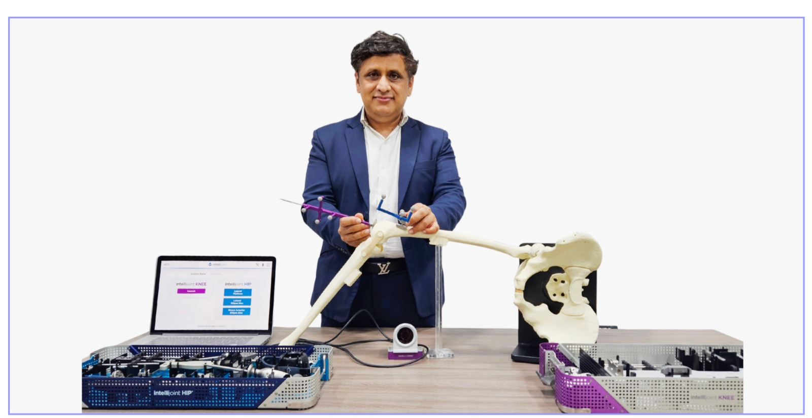

Dr. Chandrashekar P Robotic Knee & Joint Replacement Surgeon
A pioneer of robotic and computer-assisted knee replacement in India, and co-creator of MISSO, India's first indigenous joint-replacement robot. Founder of the International Knee & Orthopaedic Centre (IKOC), Bengaluru.

Experience that Speaks
Verifiable clinical track record
*Figures reflect cumulative surgical experience to date.

About Dr. Chandrashekar P
Dr. Chandrashekar P is a Bengaluru-based orthopaedic surgeon who has dedicated his career to the knee and to joint replacement, with a special focus on robotic and computer-assisted techniques. He is the Founder of the International Knee & Orthopaedic Centre (IKOC) and Head of Orthopaedics at Sakra World Hospital.
Over more than 15 years of practice, he has helped thousands of patients move again, from robotic total knee replacement and partial (unicondylar) knee replacement to meniscus repair, ligament reconstruction and cartilage preservation for younger patients.
He was an early adopter of robotic joint replacement in India and co-created MISSO, positioned as the country’s first fully indigenous knee-replacement robot, with the aim of making precise, technology-assisted surgery more affordable and available beyond the big metros.
Alongside surgery, he trains orthopaedic surgeons from India and abroad, lectures at national and international conferences, and publishes on robotic surgery, custom-fit implants and arthroscopy.
Areas of Clinical Expertise
Specialised orthopaedic care built on years of advanced surgical precision.
Robotic Knee Replacement
Total and partial knee replacement guided by active robotic and computer-navigation systems for precise implant alignment.
Joint Replacement
Knee, hip and shoulder replacement, including complex primary and revision surgery for failed replacements.
Sports Medicine & Arthroscopy
Keyhole surgery for ligament (ACL/PCL) reconstruction, cartilage repair and shoulder instability.
Meniscus Repair & Transplant
All-inside meniscal repair and meniscal transplantation to protect the natural joint.
Knee Resurfacing
Joint-preserving options for early and moderate arthritis, delaying or avoiding a full replacement for younger patients.
Cartilage & Ligament Restoration
Neo-ligament reconstruction and cartilage restoration techniques for knee stability and longevity.
Precision You Can Plan For
Traditional knee replacement relies heavily on the surgeon’s manual judgement in theatre. Robotic and computer-assisted surgery adds a layer of measurement and planning, the joint is mapped in detail, the surgical plan is rehearsed digitally, and implant positioning is guided in real time during the procedure.
India's First AI-Powered Total Knee Replacement
In January 2026, Dr. Chandrashekar P led India’s first AI-powered total knee replacement surgery using an imageless, real-time guidance system.
What this can mean for patients:
- More accurate implant alignment and sizing
- Surgical plan tailored to unique anatomy
- Minimally invasive, tissue-sparing approach
- A focus on faster, comfortable recovery
*Suitability for robotic surgery is decided after a full clinical assessment. Individual outcomes vary.


Intellijoint KNEE & HIP Smart Navigation
In addition to active robotic-arm assistance, Dr. Chandrashekar P utilizes the **Intellijoint** surgical navigation system. Unlike large, traditional navigation towers, Intellijoint is a compact, smart-sensor tracking system that sits directly within the sterile field, providing the surgeon with real-time digital measurements of leg length, offset, and implant alignment.
Clinical benefits of Intellijoint smart navigation:
- Real-Time Data: Millimeter and degree precision for implant positioning.
- Imageless Navigation: Eliminates the need for pre-operative CT scans and excessive radiation.
- Hip & Knee Precision: Promotes accurate leg length restoration and alignment.
- Tissue-Friendly: Fits seamlessly into standard surgical workflows.
Innovations & Milestones
A timeline of clinical contributions and pioneering achievements.
Co-creator of MISSO
Played a key role in designing MISSO, reported in the press as India’s first indigenous robotics system for joint replacement, aimed at making robotic surgery affordable and accessible.
India’s first AI-powered TKR
Performed India’s first AI-guided, imageless total knee replacement using an active real-time navigation system.
Active-robotics pioneer
An early adopter of active robotic knee replacement in India and serves as a global advisor for the CUVIS active-robotic platform.
Direct Lateral Portal Portal Description
Credited with describing a new knee arthroscopy portal (the Direct Lateral Portal) to improve visualization and reach during keyhole procedures.
Current Roles & Registration
-
Founder & Chairman
International Knee & Orthopaedic Centre (IKOC), Bengaluru
-
Director, Senior Consultant & HOD
Head of Department of Orthopaedics, Sakra World Hospital, Bengaluru
-
Medical Registration
Karnataka Medical Council Registration No. 66588
Qualifications & Fellowships
-
MBBS
JSS Medical College, Mysuru
-
MS (Orthopaedics)
Vijayanagara Institute of Medical Sciences (VIMS), Bellary
-
FIJS
Fellowship in Joint Replacement Surgery (Germany, USA, Belgium & South Korea)
Research & Scholarly Publications
Peer-reviewed papers demonstrating clinical research and evidence-based practice (E-E-A-T).
Intra-operative Safety of an Autonomous Robotic System for Total Knee Replacement: A Review of Cases in India
Analysing surgical outcomes and safety metrics of active autonomous robotics platforms used in joint surgery.
Patient-Specific Intra-operative Guides (Custom Fit) in Knee Replacement
An analysis of anatomical templates and 3D custom fitting technologies during total knee arthroplasty.
Tumour-Induced Osteomalacia due to Phosphaturic Mesenchymal Tumour of the Sphenoid Bone
Case analysis regarding rare orthopaedic presentations of mesenchymal tumours and bone density metabolic changes.
Arthroscopic Excision of Calcific Deposits on the Lateral Collateral Ligament through a New Portal
Clinical report detailing a novel arthroscopic approach for lateral-side knee pathologies (Direct Lateral Portal).
Full list of publications and research abstracts available upon request.
Featured in the Press
Major national and medical news coverage regarding technology innovations and case success.
India's first AI-powered joint replacement surgery unveiled at Sakra IKOC
Read Coverage Digital Health NewsSakra IKOC performs India's first AI-powered total knee replacement
Read Coverage This Week IndiaSakra IKOC debuts India's first AI-powered total knee replacement
Read Coverage MedTech SpectrumMeril introduces advanced surgical robotic technology MISSO in India
Read Coverage BioSpectrum IndiaWorld's first fully active robotic knee replacement system (CUVIS) at Sakra
Read Coverage The TribuneIndia's homegrown MISSO surgical robotics gains national adoption
Read CoverageVideos & Patient Explainers
Explore conversations, technology launches, and visual explanations of orthopedic procedures.
Robotic Knee Replacement: Dr Chandrashekar P & Dr Akash Sharma
Surgeons from India and the UK explore the future of robotic knee surgery, sharing their mutual interest in cricket, surgical precision, and patient recovery.

How to Choose the Right Surgeon
Dr. Chandrashekar P discusses critical factors to consider when selecting an orthopaedic specialist.

Conversation with Dr. Marco Ezecheili
Technical dialogue detailing international advances in robotic systems and athlete recovery.

Precision Joint Replacement Overview
An explainer on active robotic assistance and advanced patient recovery protocols at IKOC.
In Their Words
Patient care stories and recovery experiences shared with consent.
"The surgical plan was explained to me in detail using computer models. I was back on my feet walking with support within a day of my robotic knee replacement. The precision is visible in my recovery."
R. K. Sharma
Total Knee Replacement Patient
"As a runner, finding out I had a complex meniscus tear was devastating. Dr. Chandrashekar preservation-first approach and arthroscopic surgery saved my natural joint. Highly professional care."
P. Subramaniam
Meniscus Repair Patient
"The robotic surgery gave me my active life back. The pain management post-operation was outstanding, and the physical rehabilitation support at Sakra and IKOC was systematic and compassionate."
S. Fernandez
Robotic Knee Surgery Patient
Compliance Disclaimer: These are individual experiences shared with consent. Results and recovery vary from person to person and are not guaranteed. Please consult a qualified doctor for medical advice specific to your condition.
Conditions Treated
Procedures Offered
Frequently Asked Questions
Understanding treatments, robotics, and what to expect during recovery.
Consultation Locations in Bangalore
IKOC, International Knee & Orthopaedic Centre
L-166, 3rd Floor, 5th Main Service Road, Sector 6, Outer Ring Road, HSR Layout, Bengaluru (next to Focus Diagnostics)
Book an Appointment
Select your preferred platform or contact the clinical desks directly.